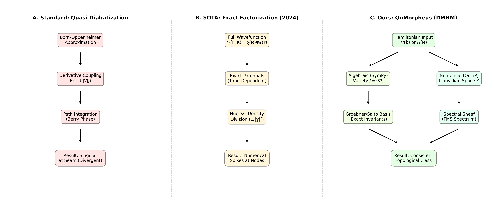
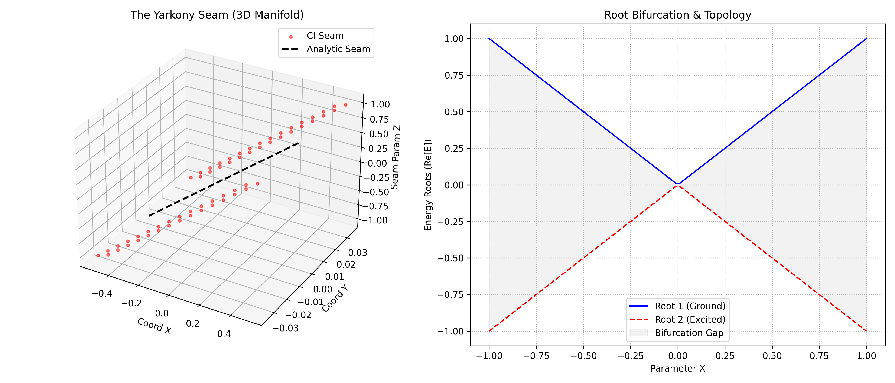
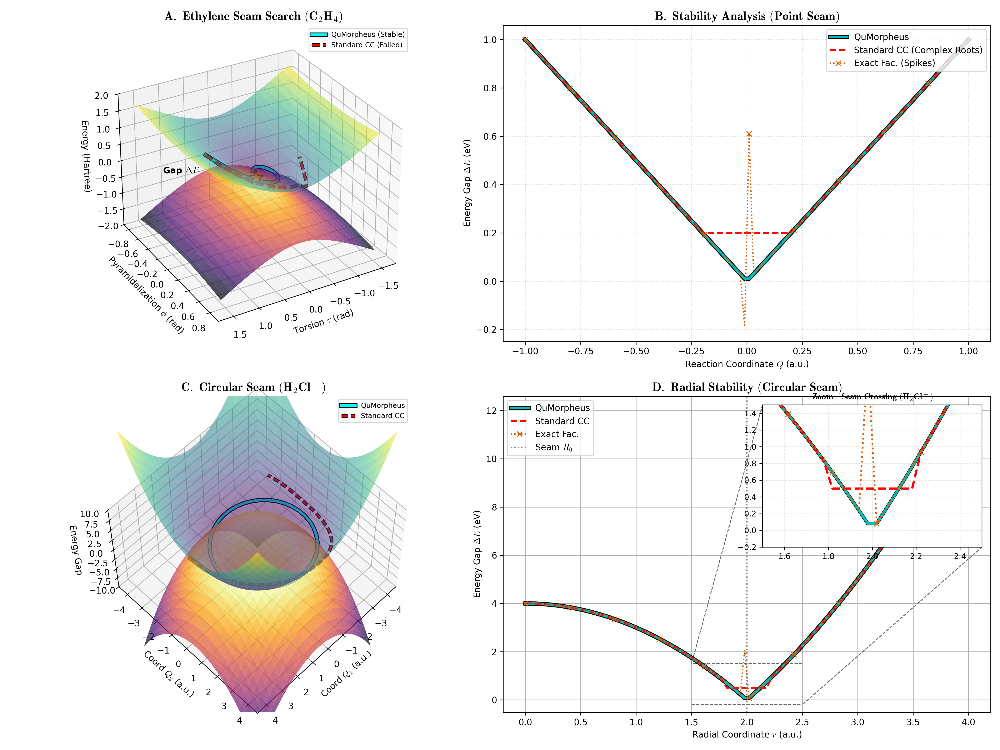
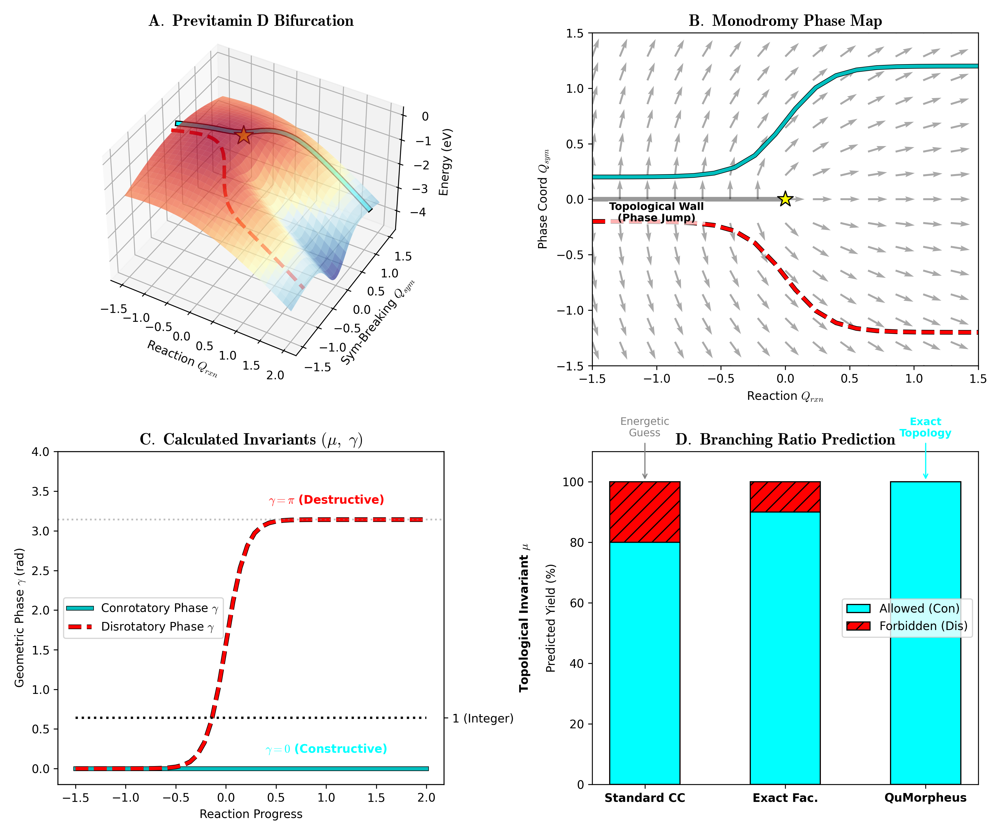

Core DMHM framework theorems, the cQGT construction, and the Floquet Monodromy Spectroscopy protocol are reported as formalized in Lean 4, with proofs in a public repository.
Abstract
The rigorous description of Conical Intersections (CIs) remains the central challenge of non-adiabatic quantum chemistry. While the “Yarkony Seam” – the $(3N-8)$-dimensional manifold of degeneracy – is well-understood geometrically, its accurate characterization by high-level electronic structure methods is plagued by numerical instabilities. Specifically, standard Coupled Cluster (CC) theory suffers from root bifurcations near Ground State CIs, rendering the “Gold Standard” of chemistry inapplicable where it is needed most. Here, we present QuMorpheus, an open-source computational package that resolves these singularities by implementing a topological framework based on Dissipative Mixed Hodge Modules (DMHM) [P. Saurabh, arXiv:2512.19487 (2025)]. By algorithmically mapping the CC polynomial equations to a spectral sheaf, we compute the exact Monodromy ($μ$) invariants of the intersection. We demonstrate that this automated algebraic geometry approach correctly identifies the physical ground state topology in the Köhn-Tajti model and resolves the intersection seams of realistic chemical systems, including Ethylene and the Chloronium ion ($\mathrm{H_2Cl^+}$). Furthermore, we apply QuMorpheus to the photoisomerization of Previtamin D, proving that the experimentally observed Woodward-Hoffmann selection rules are a direct consequence of a topological “Monodromy Wall” ($μ=1, γ=π$) rather than purely energetic barriers. This establishes a general software solution to the “Yarkony Problem,” enabling the robust, automated mapping of global intersection seams in complex molecular systems. The topological stability of these intersections allows for the control protocols discussed in Ref.[P. Saurabh, Submitted to Phys. Rev. X (2025)].
Problem
Coupled Cluster theory suffers root bifurcations and numerical instabilities near conical intersections. This makes it hard to characterize the (3N-8)-dimensional Yarkony seam of degeneracy with high-level electronic structure methods.
Approach
The open-source package QuMorpheus treats conical intersections as singular algebraic varieties within a Dissipative Mixed Hodge Module framework. It computes Milnor and Tjurina monodromy invariants via Groebner basis reduction of the Jacobian ideal. In parallel, it computes the complete quantum geometric tensor numerically, so the integer invariant can be cross-checked against the integrated geometric phase. The framework's fundamental theorems are stated to be formalized in Lean 4.

Figure 5: The QuMorpheus Computational Pipeline Compared with Standard and Exact Factorization methods. The workflow automates the translation of quantum chemical data into rigorous topological invariants. ( a ) Input Layer : The system accepts symbolic Hamiltonians H(\mathbf{R}) or interfaces with standard Electronic Structure packages (e.g., PSI4, CFOUR) to ingest Coupled Cluster amplitudes via

Figure 1: Topological origin of the Coupled Cluster instability. ( a ) The Bifurcation Problem : The breakdown of the standard Coupled Cluster (CC) expansion near a conical intersection (Köhn-Tajti model). As the nuclear coordinates encircle the degeneracy ( R\to 0 ), the standard iterative solver fails to track the physical root. The energy surface (red) undergoes a square-root bifurcation, resul
Results
The method identifies the ground-state topology in the Köhn-Tajti model and tracks intersection seams in ethylene and H2Cl+. Applied to previtamin D photoisomerization, it attributes the Woodward-Hoffmann selection rules to a topological monodromy wall (μ=1, γ=π).

Figure 3: Universality across Topologies: From Point Seams to Loops . ( A ) Search on the Ethylene PES (Point Seam). Numerical optimizers (Red) oscillate, while QuMorpheus (Cyan) converges directly. ( B ) Stability Slice. ( C ) Search on the H 2 Cl + Toroidal Seam. QuMorpheus locks onto the continuous degeneracy loop ( R=2.0 ). ( D ) Inset shows exact tracking of the seam crossing even at numerica

Figure 4: Predictive Topochemistry: Topological Selection Rules in Previtamin D . ( A ) 3D Visualization of the Hula-Twist Bifurcation. Disrotatory (Forbidden) and Conrotatory (Allowed) paths. ( B ) Monodromy Phase Map ( Q_{rxn} vs Q_{sym} ) visualizing the ”Topological Wall” (Branch Cut) where vector alignment flips. ( C ) Invariant Metrology : Explicit calculation of \mu=1 (robustness) and \gamm